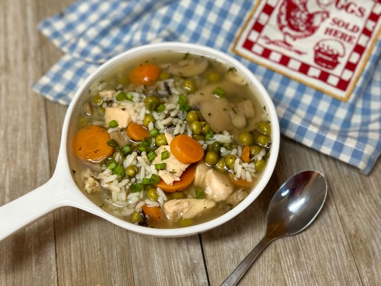

Chicken and Wild Rice Soup Recipe

Dish Description
This quick and easy no-chop chicken and wild rice soup is for those weeks when you have neither the time or energy to pull off a soup with freshly-chopped ingredients.
This is my big batch go-to for Sunday weekly lunch prep.
Ingredients
These are the ingredients you’ll need to make this soup:
- 2 cups water
- 2 cups chicken broth
- 1 (15 ounce) can sweet peas and sliced carrots, drained
- 1 (6.5 ounce) can mushroom pieces and stems, drained
- 1 (10 ounce) can premium chicken breast in water, drained
- 1 (4.3 ounce) box long grain and wild rice mix (such as Rice-A-Roni®)
- salt and freshly ground black pepper to taste
- chopped green onions for garnish (optional)
How to Make This Delicious Soup
- Combine water, broth, peas and carrots, mushrooms, chicken, and rice mix with seasoning in a large pot. Bring to a boil over high heat. Reduce heat, cover, and simmer for 20 minutes.
- Ladle into bowls; season with salt and pepper. Garnish with chopped green onions.